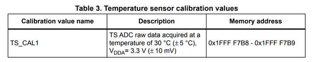
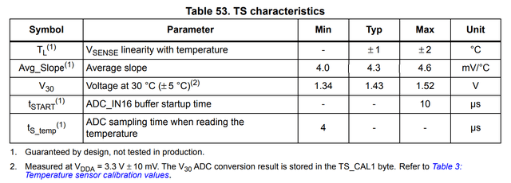

There is only one point calibration documented and its reference temperature is known with a precision of ±5℃. That’s not enough to calculate temperature but it shows that the sensor was tested in production.
Notice that the calibration value name is TS_CAL1, some other STM32 chipset families do have a second temperature factory calibration point TS_CAL2. Also some don’t have any factory calibration stored at all. So you have to refer to the datasheet that matches the chip you are targeting when you port your code to a new chipset.

The sensor linearity with temperature is at worst ±2℃. So I am curious to see how it performs over a range of temperature.
If you are so lucky that you have picked a STM32F030 chip that has the typical average slope of 4.3 mV/℃ and was calibrated in factory at exactly 3.3V and 30℃, then you could use the following formula to calculate the temperature.
T = 30 + (TS_CAL1 * 3.3 – TS_RAW * VDDA) / 4095 / 0.0043
with
VDDA = 3.3 * VREFINT_CAL / V_RAW
that gives
T = 30 + 3.3 * (TS_CAL1 – TS_RAW * V_CAL / V_RAW) / 4095 / 0.0043
If I express the average slope in raw ADC units per ℃ instead of mV/℃
5.336 = 4095 * 0.0043 / 3.3
the final formula is
T = 30 + (TS_CAL1 – TS_RAW * V_CAL / V_RAW) * 1000 / 5336
which matches the sample code for temperature computation given in the reference manual (RM0360 A.7.16).
/* Temperature sensor calibration value address */
#define TEMP30_CAL_ADDR ((uint16_t*) ((uint32_t) 0x1FFFF7B8))
#define VDD_CALIB ((uint32_t) (3300))
#define VDD_APPLI ((uint32_t) (3000))
#define AVG_SLOPE ((uint32_t) (5336)) /* AVG_SLOPE in ADC conversion step
(@3.3V)/°C multiplied by 1000 for
precision on the division */
int32_t temperature; /* will contain the temperature in degrees Celsius */
temperature = ((uint32_t) *TEMP30_CAL_ADDR
- ((uint32_t) ADC1->DR * VDD_APPLI / VDD_CALIB)) * 1000;
temperature = (temperature / AVG_SLOPE) + 30;
If I use the raw ADC readings from my last run
VDDA = 3.3 * 1526 / 1538 = 3.274V
t = 30 + (1721 – 1718 * 1526 / 1538) * 1000 / 5336 = 33.07℃
I confirm the voltage with a voltmeter (measured 3.282V versus 3.274V computed). The computed internal temperature value is roughly 5℃ higher than the room temperature.
| Content | Start Address | Size | |---------------|---------------|------| | System Memory | 0x1FFFEC00 | 3KB | | Option Bytes | 0x1FFFF800 | 2KB | | RAM Memory | 0x20000000 | 4KB |The calibration data are saved in the last 96 bytes of the System Memory, starting at address 0x1FFFF7A0. So it’s simple to dump the content of that zone and compare the values for multiple chips.
$ stm32flash -r - -S 0x1FFFF7a0:96 COM3 2>/dev/null | hexdump -C 00000000 ff ff ff ff 31 00 10 00 ff ff ff ff 1c 00 3a 00 |....1.........:.| 00000010 12 57 34 41 38 32 30 20 b9 06 f6 05 f0 ff ff ff |.W4A820 ........| 00000020 ff ff 11 05 ff ff ff ff fc ff ff ff 10 00 ff ff |................| 00000030 ff ff ff ff ff ff ff ff ff ff ff ff ff ff ff ff |................| 00000040 ff ff ff ff ff ff ff ff f3 ff ff ff ff ff ff ff |................| 00000050 ff ff ff ff ff ff ff ff 68 97 52 ad 3b c4 3f c0 |........h.R.;.?.| 00000060
| Location | Content | Size | F030 | F0x1/2/8 | |------------|-----------------|------|------|----------| | 0x1FFFF7AC | Unique ID | 12 | | √ | | 0x1FFFF7B8 | TS_CAL1 | 2 | √ | √ | | 0x1FFFF7BA | VREFINT_CAL | 2 | √ | √ | | 0x1FFFF7C2 | TS_CAL2 | 2 | | √ | | 0x1FFFF7CC | Flash size (KB) | 2 | √ | √ |This is the same layout as the one documented in RM0091 Reference Manual STM32F0x1/STM32F0x2/STM32F0x8 which includes the following sample code for temperature computation.
/* Temperature sensor calibration value address */
#define TEMP110_CAL_ADDR ((uint16_t*) ((uint32_t) 0x1FFFF7C2))
#define TEMP30_CAL_ADDR ((uint16_t*) ((uint32_t) 0x1FFFF7B8))
#define VDD_CALIB ((uint16_t) (330))
#define VDD_APPLI ((uint16_t) (300))
int32_t temperature; /* will contain the temperature in degrees Celsius */
temperature = ((int32_t) ADC1->DR * VDD_APPLI / VDD_CALIB)
- (int32_t) *TEMP30_CAL_ADDR;
temperature *= (int32_t)(110 - 30);
temperature /= (int32_t)(*TEMP110_CAL_ADDR - *TEMP30_CAL_ADDR);
temperature += 30;
Factoring in the actual measured voltage, this gives
T = 30 + (TS_CAL1 – TS_RAW * V_CAL / V_RAW) * 80 / (TS_CAL1 – TS_CAL2)
If I use the raw ADC readings from my last run
TSCAL2_SLOPE = (1721 - 1297) / 80 = 5.3 ADC step/℃
= 3.3 * 5.3 / 4095 = 4.271 mV/℃
t = 30 + (1721 – 1718 * 1526 / 1538) * 80 / (1721 – 1297) = 33.09℃
Which is only 0.02℃ higher than the previous result based on the more generic formula. Because the temperature measured is close to the calibration temperature, the correction is negligible. For this particular chip, to see a difference of 0.1℃ between the value computed by the two formulas, you need a delta of 15℃ from the calibration temperature.
I update the application to use TS_CAL2 based temperature calculation and access the tuned reference temperature from the option bytes.
/* adcmain.c -- ADC reading of reference voltage and temperature sensor */
#include <stdio.h>
#include "system.h"
#define RAW
#define TS_CAL2 ((const short *) 0x1FFFF7C2)
#define USER0 ((const unsigned char *) 0x1FFFF804)
int main( void) {
unsigned last = 0 ;
short calV, calC ;
/* Initialize ADC and fetch calibration values */
adc_vnt( VNT_INIT, &calV, &calC) ;
#ifdef RAW
printf( "%u, %u\n", calV, calC) ;
int baseC = 300 ;
# ifdef USER0
if( 0xFF == (USER0[ 0] ^ USER0[ 1]))
baseC = USER0[ 0] * 10 ;
# endif
#endif
for( ;;)
if( uptime == last)
yield() ;
else {
short Vsample, Csample ;
last = uptime ;
#ifdef RAW
adc_vnt( VNT_RAW, &Vsample, &Csample) ;
printf( "%i, %i, %i, %i, ", calV, Vsample, calC, Csample) ;
Csample = baseC + (calC - (int) Csample * calV / Vsample)
# ifdef TS_CAL2
* 800 / (calC - *TS_CAL2) ;
# else
* 10000 / 5336 ;
# endif
Vsample = 330 * calV / Vsample ;
#else
adc_vnt( VNT_VNC, &Vsample, &Csample) ;
#endif
printf( "%i.%i, %i.%i\n", Vsample / 100, Vsample % 100,
Csample / 10, Csample % 10) ;
}
}
Next, I will cover the toolchain update that I made while working on the temperature sensors.